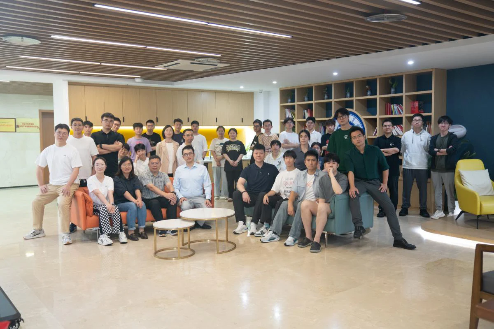
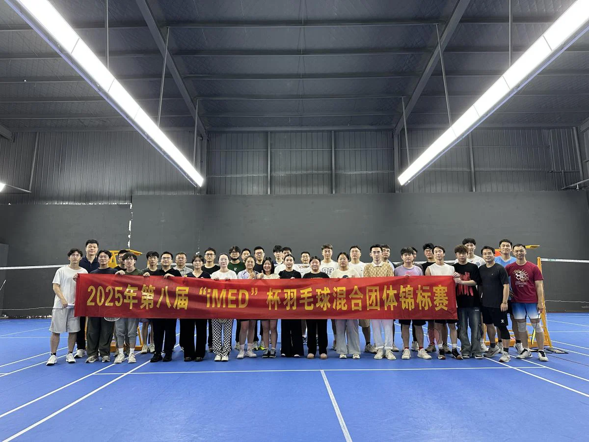

6月13日，第八届“iMED杯”羽毛球锦标赛如期举行。为了给即将毕业的同学们送上一个特别的告别仪式，iMED团队精心策划了包括团队合影、羽毛球比赛和毕业聚餐在内的一整天活动，用运动与美食共同铭记这一难忘的时刻。
当天上午，全体成员齐聚一堂，在研究所内拍摄了一张张温馨的团队合照，记录下属于iMED大家庭的青春与回忆。合照不仅定格了时光，也定格了大家彼此间的深厚情谊。

下午，热血激昂的羽毛球比赛在羽毛球馆火热开战。在廖炜城和董安凯的组织下，参赛成员通过抽签方式完成分组，确保比赛过程公平公正。在袁磊磊的统筹指挥下，比赛正式拉开帷幕。赛场上，选手们挥汗如雨、奋力拼搏，精妙的吊球、凌厉的扣杀、默契的配合让现场掌声与喝彩声此起彼伏，展现了iMED团队朝气蓬勃、积极向上的精神风貌。
经过多轮角逐，最终诞生了冠亚季军选手，大家在竞技中收获了友谊，也收获了快乐。iMED团队还为每一位参赛者精心准备了纪念奖品，让每个人都满载而归。

傍晚时分，全体成员一同前往餐厅参加毕业聚餐。餐桌间，毕业生们畅谈研究生阶段的心路历程，老师与同学们也纷纷送上最真挚的祝福与鼓励。欢声笑语中，大家不仅分享了比赛的喜悦，更倾诉了临别的不舍与期待。
此次“iMED杯”羽毛球赛与毕业聚餐活动，不仅丰富了课题组的文化生活，也为毕业生们留下了满满的温情回忆。愿他们带着iMED的祝福与力量，在未来的道路上乘风破浪，前程似锦！
编辑：董安凯